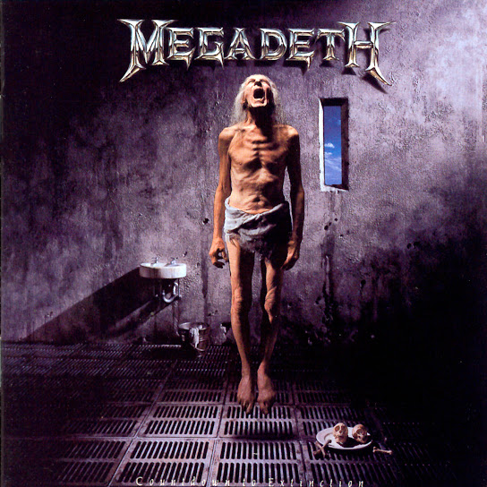
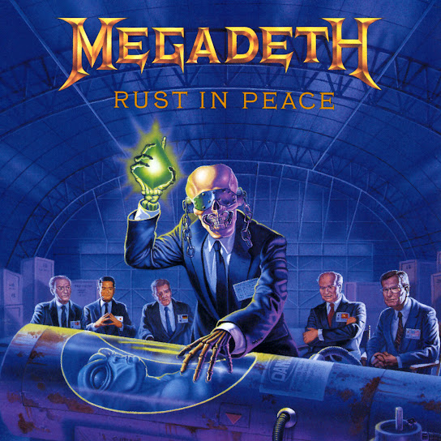

Discografía
Estos son algunos de los álbumes más representativos de esta banda, con enlace directo a YouTube para escuchar el disco completo.
Álbumes Destacados

Countdown to Extinction (1992)
Siendo el album mas exitoso de Megadeth, se volvio un album iconico, siendo el album con canciones iconicas como "Symphony of Destruction" y "Sweating Bullets""
Escuchar en YouTube
Peace sells... but who's buying (1990)
Un album con canciones que suenan al dia de hoy, y unos de lo mas iconicos de Megadeth, con canciones como "Peace sells" y "Good Mourning / Black Friday" se convirtio en unos de sus albumes mas queridos hasta la fecha.
Escuchar en YouTube

Rust in Peace (1990)
iUn album iconico, lleno de solos increibles y una ambientacion perfecta. canciones como "Holy Wars...The Punishment Due" y "Tornado Souls" al dia de hoy son iconos.
Escuchar en YouTube